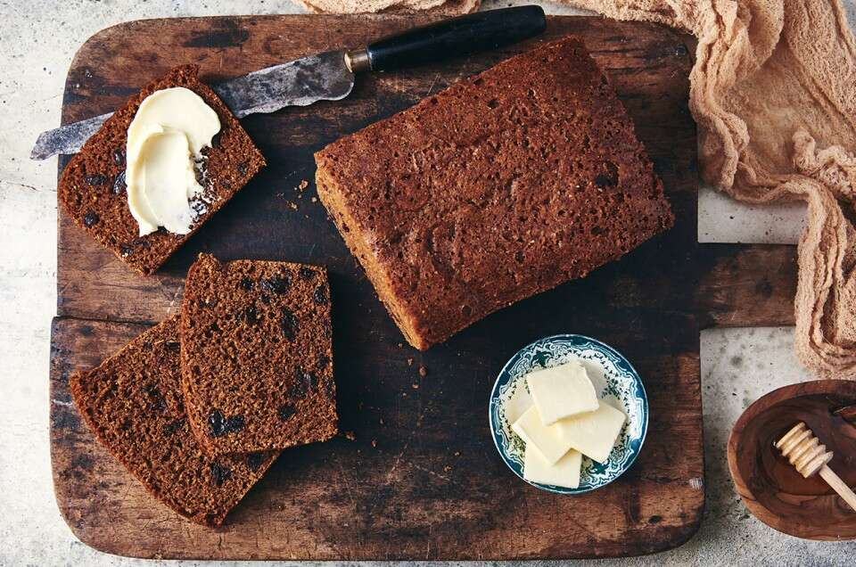

Boston brown bread is a dark, sweet bread that is traditionally steamed in a can. It can be made with different types of flour such as graham, whole wheat, rye, or cornmeal. Many bakers like to add maple syrup, raisins, or molasses in order to improve its flavors. The bread is traditionally prepared during fall and winter, when it is usually accompanied by baked beans on the side.
Meal prep time : 2 hours 35 minutes
Servings : 4-6